LumiMatch - подбор по sample V2
Поставщики ограничены списком suppliers.txt. Этот основной отчёт намеренно содержит только подтверждённые in_stock; отдельная диагностика временно недоступных визуальных кандидатов вынесена в соседний отчёт.
F-01: гостиная / столовая - подвесной светильник
Распознано: Несколько компактных чёрных цилиндрических подвесов с направленным светом над зоной гостиной/столовой.
Количество: 3; цвет: чёрный; монтаж: подвесной, потолочный; family: pendant_single.
Источники: Dan_dia-2.pdf, лист 10, Dan_dia-2.pdf, лист 11, Dan_dia-2.pdf, лист 14, Dan_vis.pdf, страницы 1-8
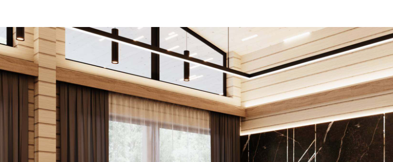
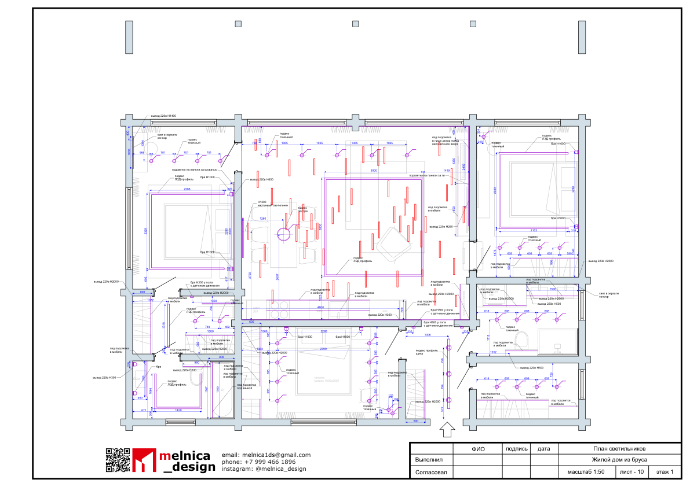
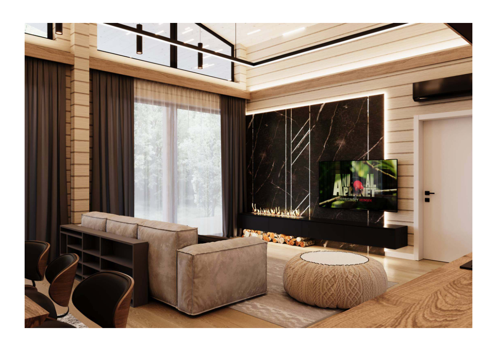
Search stats: {"total_catalog": 301, "excluded_availability": 129, "excluded_family": 205, "excluded_missing_photo": 0, "excluded_mounting": 62, "excluded_dimensions": 0, "primary_color_pool": 39, "color_alternative_pool": 3, "visual_pool": 42, "rejected_by_visual": 0, "finalists": 1, "discontinued_rejected": 0, "availability_not_published_pool": 0, "supplier_availability_modes": {"stock_tracked": 301}, "reasons": [], "wide_candidates_considered": 42, "unavailable_wide_candidates_considered": 1, "live_recheck_rejected": 0, "unavailable_live_recheck_rejected": 0, "in_stock_visual_finalists": 1, "out_of_stock_visual_finalists": 0, "preorder_visual_finalists": 0, "expected_visual_finalists": 0, "check_availability_visual_finalists": 0, "visual_rejected": 0, "availability_gate": "supplier capability: stock_tracked / stock_not_published / mixed", "color_fallback_used": false}
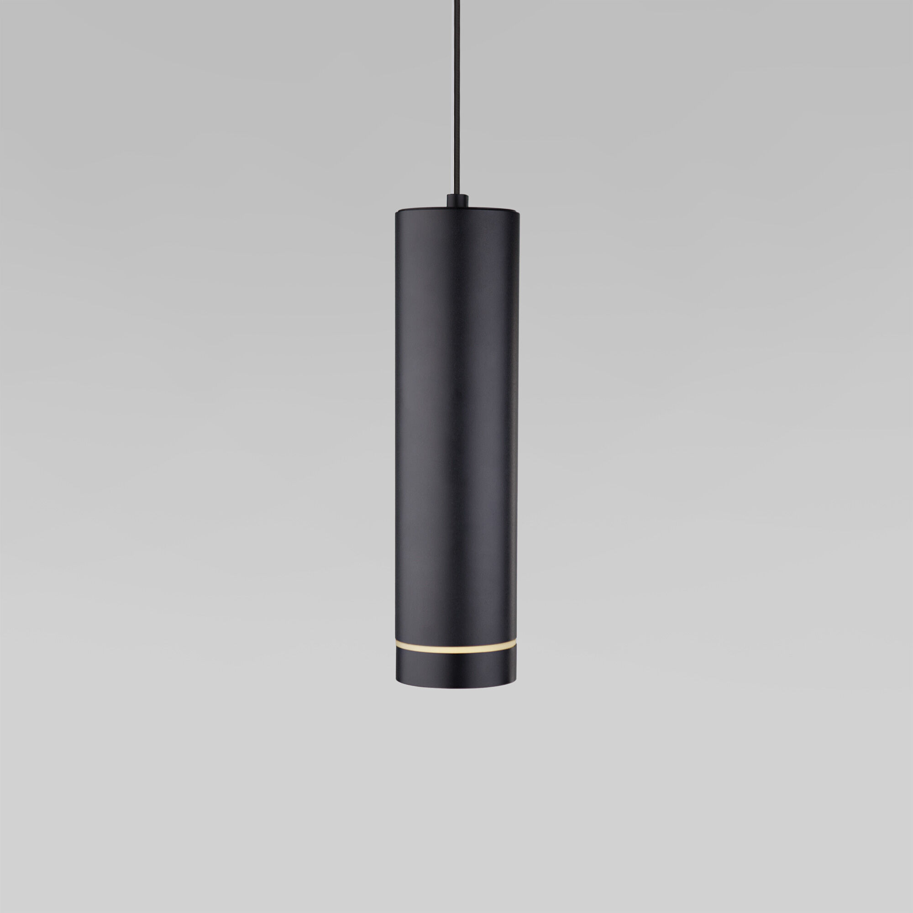
1. Подвесной светодиодный светильник (очень близкий аналог)
pendant_single 0.94Поставщик: eurosvet.ru
Артикул: a040264
Наличие: Подтверждено в наличии
Режим поставщика: stock_tracked
Цена: 4210.0 RUB
Параметры: цвет неизвестен; размеры ширина: 100 мм; высота: 390 мм; длина: 103 мм; family pendant_single
Оценки: visual 0.94; overall 0.82; type 0.96; dimensions 0.55; technical 0.62
На фото компактный чёрный цилиндрический подвес, по силуэту близкий к тёмным цилиндрам на визуализациях гостиной.
точная модель по проекту не доказана, размеры подвеса в sample не указаны, нужно проверить высоту подвеса и светораспределение
Открыть карточку поставщика
F-02: гостиная / спальни - линейный потолочный светильник
Распознано: Тонкие чёрные линейные элементы света, встроенные или установленные в деревянный потолок; точная система не указана.
Количество: не указано; цвет: чёрный; монтаж: потолочный; family: linear_profile.
Источники: Dan_dia-2.pdf, лист 10, Dan_dia-2.pdf, лист 11, Dan_vis.pdf, страницы 1-8 и 11-22
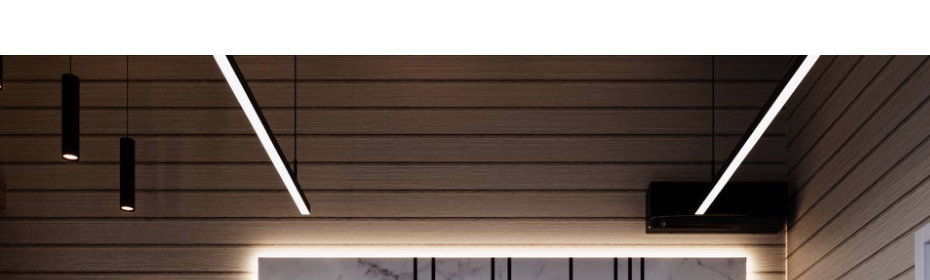
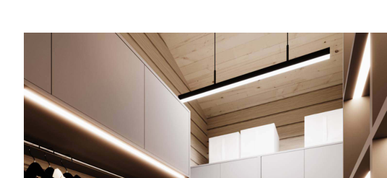
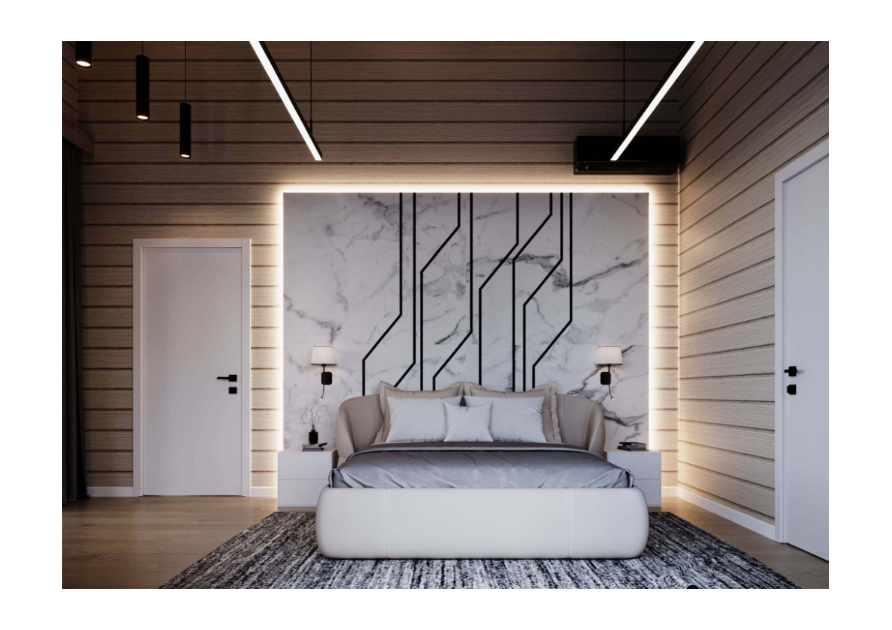
Search stats: {"total_catalog": 301, "excluded_availability": 129, "excluded_family": 231, "excluded_missing_photo": 0, "excluded_mounting": 0, "excluded_dimensions": 0, "primary_color_pool": 28, "color_alternative_pool": 0, "visual_pool": 28, "rejected_by_visual": 0, "finalists": 0, "discontinued_rejected": 0, "availability_not_published_pool": 0, "supplier_availability_modes": {"stock_tracked": 301}, "reasons": [], "wide_candidates_considered": 28, "unavailable_wide_candidates_considered": 1, "live_recheck_rejected": 0, "unavailable_live_recheck_rejected": 0, "in_stock_visual_finalists": 0, "out_of_stock_visual_finalists": 0, "preorder_visual_finalists": 0, "expected_visual_finalists": 0, "check_availability_visual_finalists": 0, "visual_rejected": 0, "availability_gate": "supplier capability: stock_tracked / stock_not_published / mixed", "color_fallback_used": false}
Ничего не найдено. Попробуйте подобрать вручную.
F-03: мастер-спальня - настенное бра у кровати
Распознано: Парные бра по сторонам кровати: небольшой светлый абажур и тёмное основание, мягкий локальный свет.
Количество: 2; цвет: чёрный / светлый абажур; монтаж: настенный; family: wall_sconce.
Источники: Dan_dia-2.pdf, лист 11, Dan_dia-2.pdf, лист 14, Dan_vis.pdf, страницы 11-17
Search stats: {"total_catalog": 301, "excluded_availability": 129, "excluded_family": 206, "excluded_missing_photo": 0, "excluded_mounting": 1, "excluded_dimensions": 42, "primary_color_pool": 29, "color_alternative_pool": 0, "visual_pool": 29, "rejected_by_visual": 0, "finalists": 0, "discontinued_rejected": 0, "availability_not_published_pool": 0, "supplier_availability_modes": {"stock_tracked": 301}, "reasons": [], "wide_candidates_considered": 29, "unavailable_wide_candidates_considered": 1, "live_recheck_rejected": 0, "unavailable_live_recheck_rejected": 0, "in_stock_visual_finalists": 0, "out_of_stock_visual_finalists": 0, "preorder_visual_finalists": 0, "expected_visual_finalists": 0, "check_availability_visual_finalists": 0, "visual_rejected": 0, "availability_gate": "supplier capability: stock_tracked / stock_not_published / mixed", "color_fallback_used": false}
Ничего не найдено. Попробуйте подобрать вручную.
F-04: гостевая спальня - декоративное настенное бра
Распознано: Парные вертикальные бра с округлым светящимся контуром и тёмной центральной частью по сторонам кровати.
Количество: 2; цвет: чёрный / белый свет; монтаж: настенный; family: decorative_wall.
Источники: Dan_dia-2.pdf, лист 11, Dan_dia-2.pdf, лист 14, Dan_vis.pdf, страницы 18-22
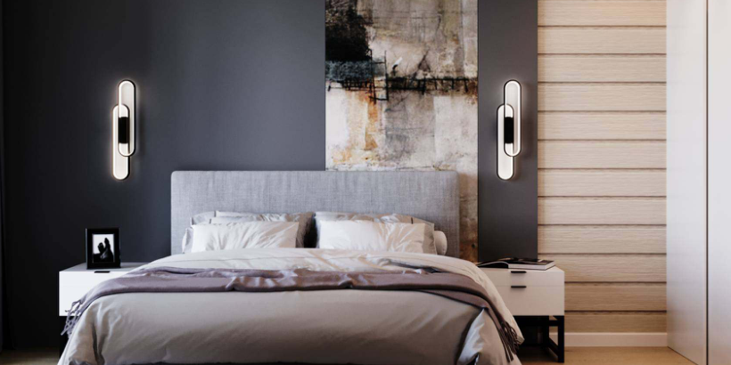
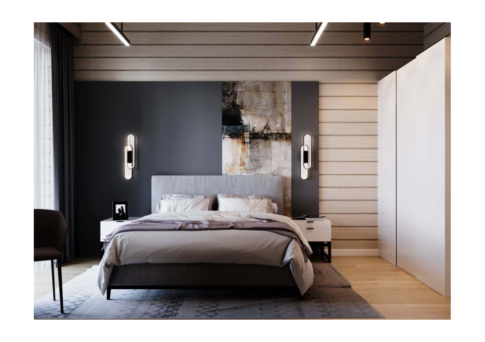
Search stats: {"total_catalog": 301, "excluded_availability": 129, "excluded_family": 206, "excluded_missing_photo": 0, "excluded_mounting": 1, "excluded_dimensions": 0, "primary_color_pool": 30, "color_alternative_pool": 1, "visual_pool": 31, "rejected_by_visual": 0, "finalists": 0, "discontinued_rejected": 0, "availability_not_published_pool": 0, "supplier_availability_modes": {"stock_tracked": 301}, "reasons": [], "wide_candidates_considered": 31, "unavailable_wide_candidates_considered": 1, "live_recheck_rejected": 0, "unavailable_live_recheck_rejected": 0, "in_stock_visual_finalists": 0, "out_of_stock_visual_finalists": 0, "preorder_visual_finalists": 0, "expected_visual_finalists": 0, "check_availability_visual_finalists": 0, "visual_rejected": 0, "availability_gate": "supplier capability: stock_tracked / stock_not_published / mixed", "color_fallback_used": false}
Ничего не найдено. Попробуйте подобрать вручную.
F-05: санузлы - подсветка зеркала
Распознано: Вертикальные или контурные световые элементы возле зеркал в санузлах; конкретная конструкция и размеры не указаны.
Количество: не указано; цвет: нейтральный белый свет; монтаж: настенный; family: mirror_light.
Источники: Dan_dia-2.pdf, лист 11, Dan_dia-2.pdf, лист 19, Dan_vis.pdf, страницы 23-30
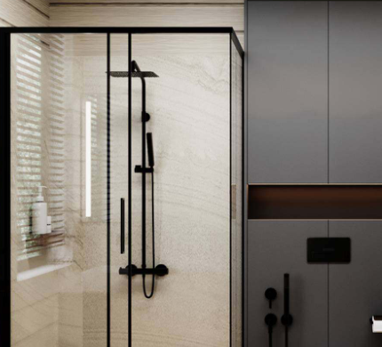
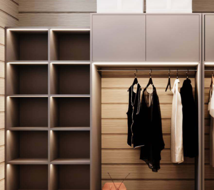
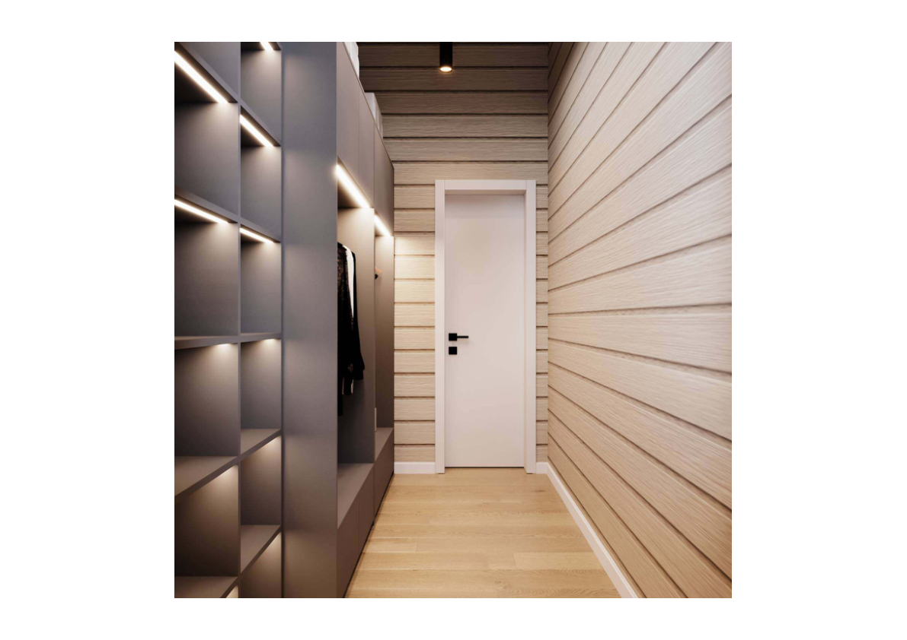
Search stats: {"total_catalog": 301, "excluded_availability": 129, "excluded_family": 206, "excluded_missing_photo": 0, "excluded_mounting": 1, "excluded_dimensions": 0, "primary_color_pool": 0, "color_alternative_pool": 0, "visual_pool": 0, "rejected_by_visual": 0, "finalists": 0, "discontinued_rejected": 0, "availability_not_published_pool": 0, "supplier_availability_modes": {"stock_tracked": 301}, "reasons": [], "wide_candidates_considered": 0, "unavailable_wide_candidates_considered": 0, "live_recheck_rejected": 0, "unavailable_live_recheck_rejected": 0, "in_stock_visual_finalists": 0, "out_of_stock_visual_finalists": 0, "preorder_visual_finalists": 0, "expected_visual_finalists": 0, "check_availability_visual_finalists": 0, "visual_rejected": 0, "availability_gate": "supplier capability: stock_tracked / stock_not_published / mixed", "color_fallback_used": false}
Ничего не найдено. Попробуйте подобрать вручную.
F-06: гостиная / спальни - точечный или трековый светильник
Распознано: Небольшие направленные потолочные приборы, часть из них визуально похожа на чёрные цилиндрические споты.
Количество: не указано; цвет: чёрный; монтаж: потолочный / трековый; family: track_spot.
Источники: Dan_dia-2.pdf, лист 10, Dan_dia-2.pdf, лист 11, Dan_vis.pdf, страницы 1-8 и 11-22
Search stats: {"total_catalog": 301, "excluded_availability": 129, "excluded_family": 223, "excluded_missing_photo": 0, "excluded_mounting": 0, "excluded_dimensions": 0, "primary_color_pool": 30, "color_alternative_pool": 0, "visual_pool": 30, "rejected_by_visual": 1, "finalists": 0, "discontinued_rejected": 0, "availability_not_published_pool": 0, "supplier_availability_modes": {"stock_tracked": 301}, "reasons": [], "wide_candidates_considered": 30, "unavailable_wide_candidates_considered": 1, "live_recheck_rejected": 0, "unavailable_live_recheck_rejected": 0, "in_stock_visual_finalists": 0, "out_of_stock_visual_finalists": 0, "preorder_visual_finalists": 0, "expected_visual_finalists": 0, "check_availability_visual_finalists": 0, "visual_rejected": 1, "availability_gate": "supplier capability: stock_tracked / stock_not_published / mixed", "color_fallback_used": false}
Ничего не найдено. Попробуйте подобрать вручную.
F-07: гостиная / спальни - шинопровод трековой системы
Распознано: Система/шина, на которую могут устанавливаться направленные приборы; конкретная серия и напряжение в проекте не доказаны.
Количество: не указано; цвет: чёрный; монтаж: потолочный; family: track_rail.
Источники: Dan_dia-2.pdf, лист 10, Dan_dia-2.pdf, лист 11, Dan_vis.pdf, страницы 1-8 и 11-22
Search stats: {"total_catalog": 301, "excluded_availability": 129, "excluded_family": 156, "excluded_missing_photo": 0, "excluded_mounting": 0, "excluded_dimensions": 0, "primary_color_pool": 80, "color_alternative_pool": 9, "visual_pool": 80, "rejected_by_visual": 0, "finalists": 0, "discontinued_rejected": 0, "availability_not_published_pool": 0, "supplier_availability_modes": {"stock_tracked": 301}, "reasons": [], "wide_candidates_considered": 80, "unavailable_wide_candidates_considered": 2, "live_recheck_rejected": 0, "unavailable_live_recheck_rejected": 0, "in_stock_visual_finalists": 0, "out_of_stock_visual_finalists": 0, "preorder_visual_finalists": 0, "expected_visual_finalists": 0, "check_availability_visual_finalists": 0, "visual_rejected": 0, "availability_gate": "supplier capability: stock_tracked / stock_not_published / mixed", "color_fallback_used": false}
Ничего не найдено. Попробуйте подобрать вручную.
F-08: гардеробная / санузлы - светодиодная лента или линейный профиль
Распознано: Скрытая непрерывная подсветка ниш, мебели, зеркал и потолочных линий; длину и мощность нужно считать вручную по плану.
Количество: не указано; цвет: нейтральный белый свет; монтаж: встроенный / скрытый; family: led_strip.
Источники: Dan_dia-2.pdf, лист 10, Dan_dia-2.pdf, лист 11, Dan_vis.pdf, страницы 23-30
Search stats: {"total_catalog": 301, "excluded_availability": 129, "excluded_family": 231, "excluded_missing_photo": 0, "excluded_mounting": 0, "excluded_dimensions": 0, "primary_color_pool": 27, "color_alternative_pool": 1, "visual_pool": 28, "rejected_by_visual": 0, "finalists": 0, "discontinued_rejected": 0, "availability_not_published_pool": 0, "supplier_availability_modes": {"stock_tracked": 301}, "reasons": [], "wide_candidates_considered": 28, "unavailable_wide_candidates_considered": 1, "live_recheck_rejected": 0, "unavailable_live_recheck_rejected": 0, "in_stock_visual_finalists": 0, "out_of_stock_visual_finalists": 0, "preorder_visual_finalists": 0, "expected_visual_finalists": 0, "check_availability_visual_finalists": 0, "visual_rejected": 0, "availability_gate": "supplier capability: stock_tracked / stock_not_published / mixed", "color_fallback_used": false}
Ничего не найдено. Попробуйте подобрать вручную.